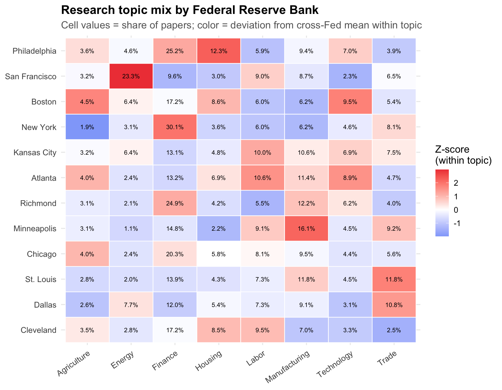
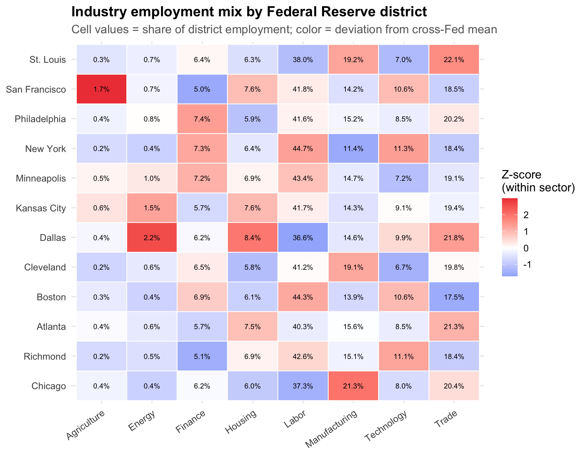
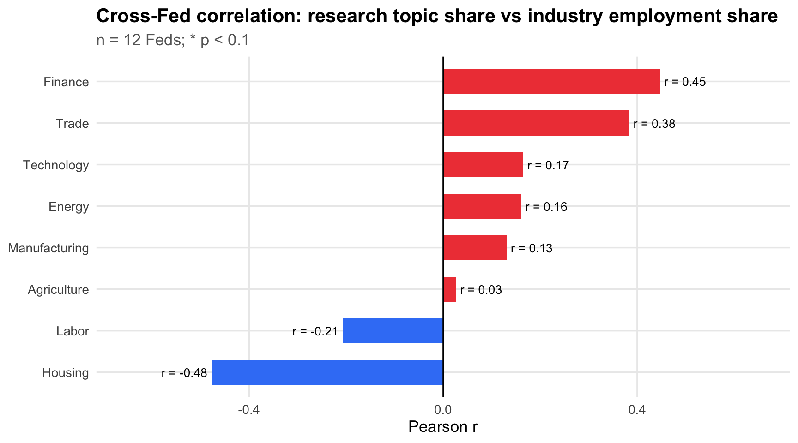
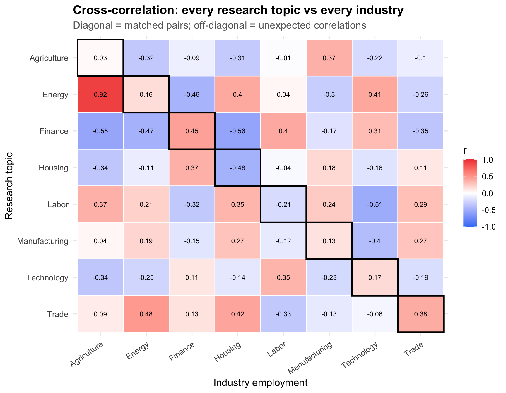
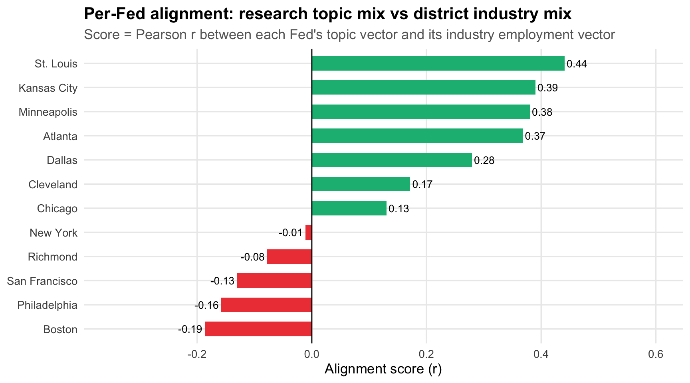

This analysis asks whether Federal Reserve Banks’ research output mirrors the economic specialization of their geographic districts. Each Fed publishes working papers through its research department; if researchers respond to their local economy, we’d expect — for example — the Dallas Fed to publish more energy research, or the New York Fed to publish more finance research.
Data sources:
Working papers (2010–2024): OpenAlex API, ~18,300 papers across all 12 Feds
Industry employment: BLS QCEW 2022 annual county-level data, aggregated to Fed districts using official district-county crosswalks
How does each Fed’s research portfolio break down by topic?
Code
topic_long <- topic_shares |>select(fed, all_of(sectors)) |>pivot_longer(-fed, names_to ="topic", values_to ="share")# Normalize within topic (z-score) so differences are visible across topicstopic_long <- topic_long |>group_by(topic) |>mutate(z = (share -mean(share)) /sd(share)) |>ungroup()ggplot(topic_long, aes(x = topic, y =fct_reorder(fed, share, .fun = sum), fill = z)) +geom_tile(color ="white", linewidth =0.4) +geom_text(aes(label = scales::percent(share, accuracy =0.1)), size =2.8, color ="black") +scale_fill_gradient2(low ="#3B82F6", mid ="white", high ="#EF4444",midpoint =0, name ="Z-score\n(within topic)" ) +scale_x_discrete(guide =guide_axis(angle =35)) +labs(title ="Research topic mix by Federal Reserve Bank",subtitle ="Cell values = share of papers; color = deviation from cross-Fed mean within topic",x =NULL, y =NULL )

3 Industry mix by Fed district
How does employment break down across the same broad sectors?
Code
ind_long <- industry_shares |>filter(sector %in% sectors)ind_long <- ind_long |>group_by(sector) |>mutate(z = (emp_share -mean(emp_share)) /sd(emp_share)) |>ungroup()ggplot(ind_long, aes(x = sector, y =fct_reorder(fed, emp_share, .fun = sum), fill = z)) +geom_tile(color ="white", linewidth =0.4) +geom_text(aes(label = scales::percent(emp_share, accuracy =0.1)), size =2.8, color ="black") +scale_fill_gradient2(low ="#3B82F6", mid ="white", high ="#EF4444",midpoint =0, name ="Z-score\n(within sector)" ) +scale_x_discrete(guide =guide_axis(angle =35)) +labs(title ="Industry employment mix by Federal Reserve district",subtitle ="Cell values = share of district employment; color = deviation from cross-Fed mean",x =NULL, y =NULL )

4 Matched-pair correlations
For each topic-industry pair, how strongly does the cross-Fed ranking of research emphasis correlate with the cross-Fed ranking of industry employment?
Code
pair_cors |>mutate(sig = p <0.1,label =paste0("r = ", round(r, 2), if_else(sig, "*", "")) ) |>ggplot(aes(x = r, y =fct_reorder(sector, r), fill = r >0)) +geom_col(width =0.6) +geom_text(aes(label = label, hjust =if_else(r >0, -0.1, 1.1)), size =3.5) +geom_vline(xintercept =0, linewidth =0.5) +scale_fill_manual(values =c("#3B82F6","#EF4444"), guide ="none") +scale_x_continuous(limits =c(-0.65, 0.65)) +labs(title ="Cross-Fed correlation: research topic share vs industry employment share",subtitle ="n = 12 Feds; * p < 0.1",x ="Pearson r", y =NULL )

Key findings:
Finance has the strongest positive match (r = 0.45): Feds in finance-heavy districts (New York, Philadelphia, Richmond) publish proportionally more finance research.
Trade is also positive (r = 0.38): St. Louis and Minneapolis — major logistics/trade corridors — publish more trade research.
Housing is negative (r = -0.48): The Feds with the most housing-sector employment are not the ones publishing the most housing research. Philadelphia publishes the most housing research despite being a mid-tier construction market.
Energy is near zero (r = 0.16): Dallas leads on energy employment but San Francisco leads on “energy” research topics — likely because San Francisco’s energy keywords capture climate/grid research rather than oil & gas.
Do topics correlate with unexpected industries? The off-diagonal cells are often as interesting as the diagonal.
Code
cross_cor |>ggplot(aes(x = sector, y =fct_rev(topic), fill = r)) +geom_tile(color ="white", linewidth =0.4) +geom_text(aes(label =round(r, 2)), size =3) +scale_fill_gradient2(low ="#3B82F6", mid ="white", high ="#EF4444",midpoint =0, limits =c(-1, 1), name ="r" ) +scale_x_discrete(guide =guide_axis(angle =35)) +labs(title ="Cross-correlation: every research topic vs every industry",subtitle ="Diagonal = matched pairs; off-diagonal = unexpected correlations",x ="Industry employment", y ="Research topic" ) +# highlight diagonalgeom_tile(data = cross_cor |>filter(topic == sector),color ="black", fill =NA, linewidth =1 )

Notable off-diagonal findings:
Energy research ~ Agriculture employment (r = 0.92): The Feds in agricultural districts (Minneapolis, Kansas City) publish the most “energy-tagged” research. This likely reflects rural energy topics — ethanol, farm energy costs, rural utilities — rather than oil & gas.
Finance research ~ Labor employment (r = 0.40): Feds in large labor markets publish more finance research, possibly reflecting broader economic size.
Housing research ~ Finance employment (r = 0.37): Finance-heavy districts study housing markets (mortgages, housing finance).
7 Per-Fed alignment scores
How correlated is each Fed’s overall topic distribution with its overall industry mix?
Code
alignment |>mutate(direction =if_else(alignment_score >0, "Aligned", "Misaligned"),label =round(alignment_score, 2) ) |>ggplot(aes(x = alignment_score,y =fct_reorder(fed, alignment_score),fill = direction )) +geom_col(width =0.6) +geom_text(aes(label = label, hjust =if_else(alignment_score >0, -0.1, 1.1)), size =3.5) +geom_vline(xintercept =0, linewidth =0.5) +scale_fill_manual(values =c("Aligned"="#10B981", "Misaligned"="#EF4444"), guide ="none") +scale_x_continuous(limits =c(-0.35, 0.6)) +labs(title ="Per-Fed alignment: research topic mix vs district industry mix",subtitle ="Score = Pearson r between each Fed's topic vector and its industry employment vector",x ="Alignment score (r)", y =NULL )

Interpretation:
Midwest Feds (St. Louis, Kansas City, Minneapolis) are most aligned — their research portfolios broadly match their districts’ manufacturing, agriculture, and trade emphasis.
Boston, Philadelphia, San Francisco are most misaligned — their research diverges from local industry. Philadelphia over-indexes on housing and health research; San Francisco over-indexes on monetary policy relative to its tech-heavy economy; Boston research is broadly national in scope.
New York is near zero — it’s the most nationally-focused Fed, so neither aligned nor misaligned with any specific sector.
8 Caveats
Abstract coverage: Only 59% of papers had abstracts in OpenAlex. Papers without abstracts were classified on title alone, which is noisier.
“Energy” topic contamination: San Francisco’s high Energy topic score likely reflects climate/electricity research, not fossil fuels. A finer keyword set (separating fossil-fuel energy from clean energy) would improve this.
State-level district assignment: Split states (Missouri, West Virginia, etc.) were assigned at the county level using published Fed district maps, but a few edge counties may be misassigned.
No causal claim: Correlation between research topics and local industries could run in either direction, or both could reflect third factors (e.g., Fed economists’ research interests attracted by local data availability).